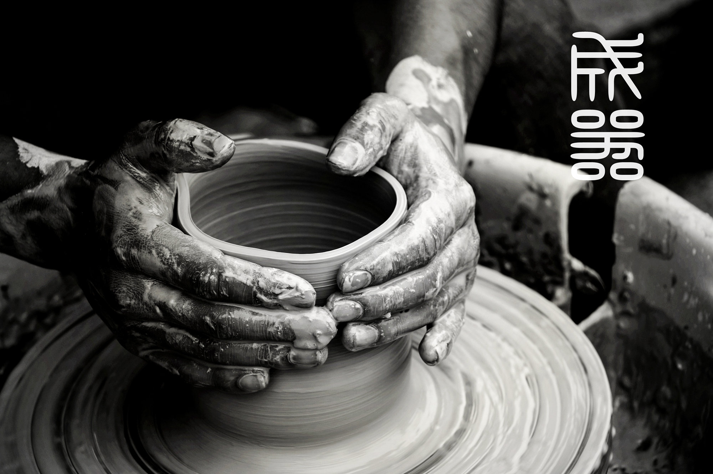
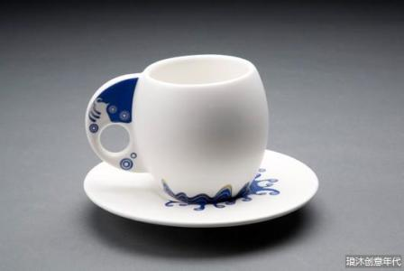
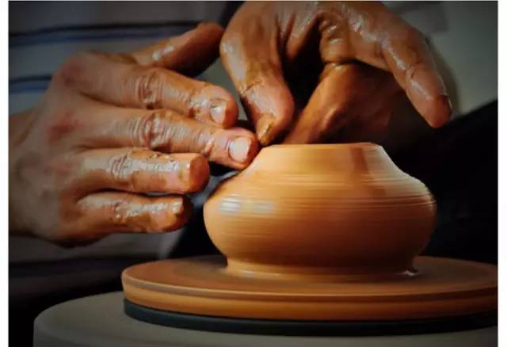

css3
属性选择符
自适应布局
静态布局
弹性布局
流式布局
响应式布局
jquery 轮播
js Date
js DOM
js 事件侦听
ajax
git 上传
中级考核，面试题
bootstrap全局css样式

HuXuYuan
日志
留言板
相册
动态
主页
The recent dynamic

老国王去世，奇格弗里德王子不久就要继承王位，因此必须要举行大婚。王子深恐失去自由，更不愿娶一位不为自己所爱的人为妻。王子在21岁生日之际，和朋友们在城堡的庭院中聚会，仆人班诺安排了生日宴会并尽力让王子快乐，不料王后突然驾到，她对这种大肆喧闹的宴会大为吃惊，提醒王子王宫还处于国丧期，王后说完离去，留下了沮丧的奇格弗里德。班诺让两名交际花跳舞去取悦王子，乐起舞兴时，班诺也热情地起舞向未来的国王祝酒。舞终人散，一行天鹅结对从王子的头顶飞过，班诺建议王子试试新弩，他们朝天鹅飞去的方向猎捕追
正当王子和奥吉莉娅共舞时，奥杰塔在窗口出现，她祈求王子记起对她的誓言，但此时的王子已被魔王的符咒迷惑分神。王子在魔王的要求下举手对奥吉莉娅许下爱的誓言——魔王的阴谋得逞了，奥杰塔绝望地呼喊离去。顿时电闪雷鸣，舞厅里一片混乱不堪，王子绝望地醒悟过来，但为时已晚，他已对别人再次承诺了爱的誓言。受到欺骗的王子冲出去寻找真正的奥杰塔
This is the process

拉坯是制作陶瓷的七十二道工序之一，也叫做坯，是成型的最初阶段，也是器物的雏形制作。它是将制备好的泥料放在坯车上，用轮制成型方法制成具有一定形状和尺寸的坯件。拉坯是我国陶瓷器生产的传统方法，凡圆器琢器俱用拉坯方法成型